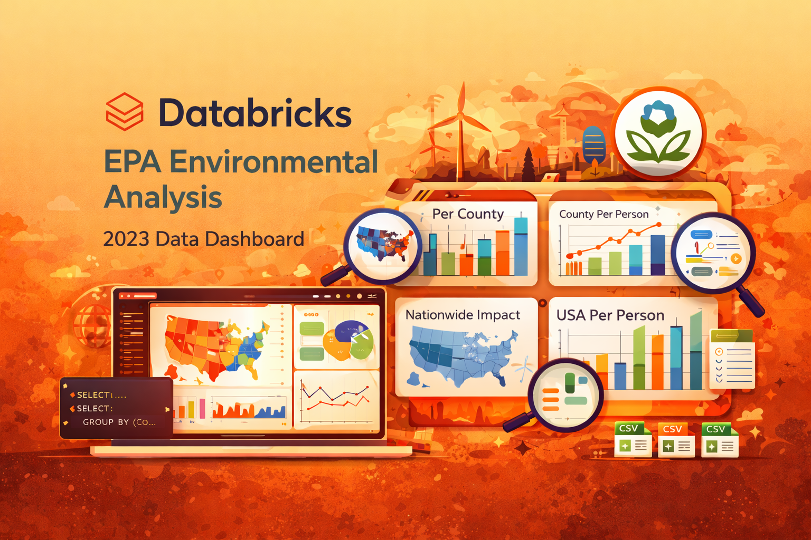

Airbnb Market Analysis – Tableau Dashboard
Project Overview
This project analyzes U.S. Environmental Protection Agency (EPA) environmental data from 2023 using the Databricks platform. The goal was to explore environmental patterns across the United States and present insights at county, per-capita, and national levels.
Using Databricks SQL, I cleaned, structured, and aggregated the dataset to support meaningful geographic and population-based comparisons. Built-in Databricks dashboards were used to create interactive visualizations that enable users to explore environmental metrics and understand regional variations.
The project demonstrates how a unified data platform can be used to transform raw public datasets into actionable insights.
Dashboard Visualizations
The dashboard includes four analytical views:
Per County Analysis
Displays environmental metrics by county to highlight regional patterns and localized differences.
Per Person Impact (County Level)
Normalizes environmental measures per capita, enabling fair comparisons between counties with different population sizes.
Nationwide Overview
Aggregates environmental metrics across the United States to provide a macro-level perspective.
Nationwide Per Person Impact
Shows environmental impact per capita at the national level to better understand overall environmental burden.
Key Highlights
-
Processed and analyzed EPA 2023 environmental data using Databricks SQL
-
Aggregated and normalized data for geographic and per-capita comparisons
-
Built interactive dashboards using Databricks’ native visualization tools
-
Enabled multi-level analysis from county-level insights to nationwide trends
-
Delivered clear, data-driven insights from a large public dataset
Tools & Technologies
-
Platform: Databricks
-
Querying & Transformation: SQL
-
Visualization: Databricks Built-in Dashboards
Outcome
This project demonstrates the ability to analyze large public datasets, perform meaningful aggregations, and deliver clear visual insights using a modern cloud data platform.